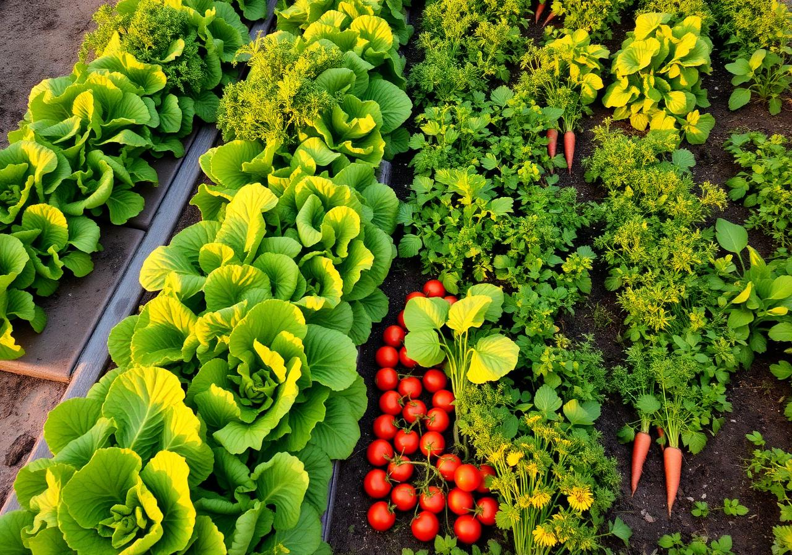
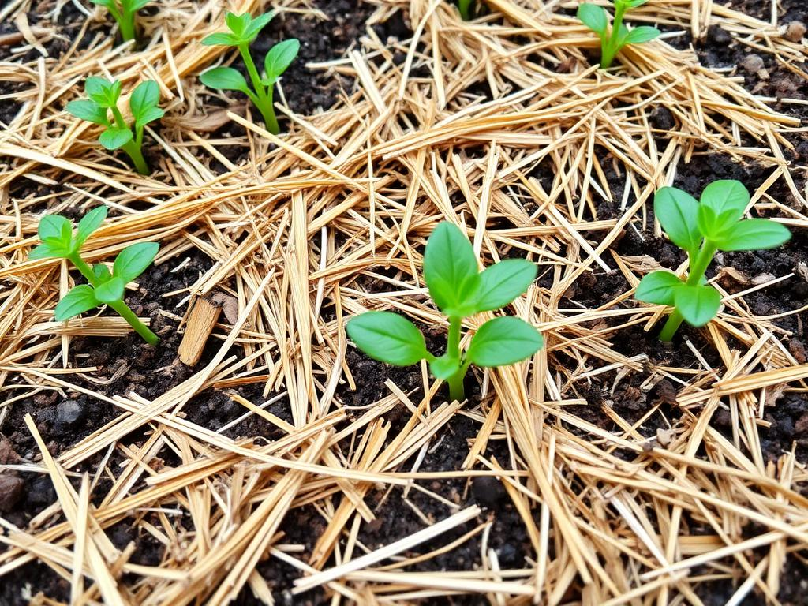
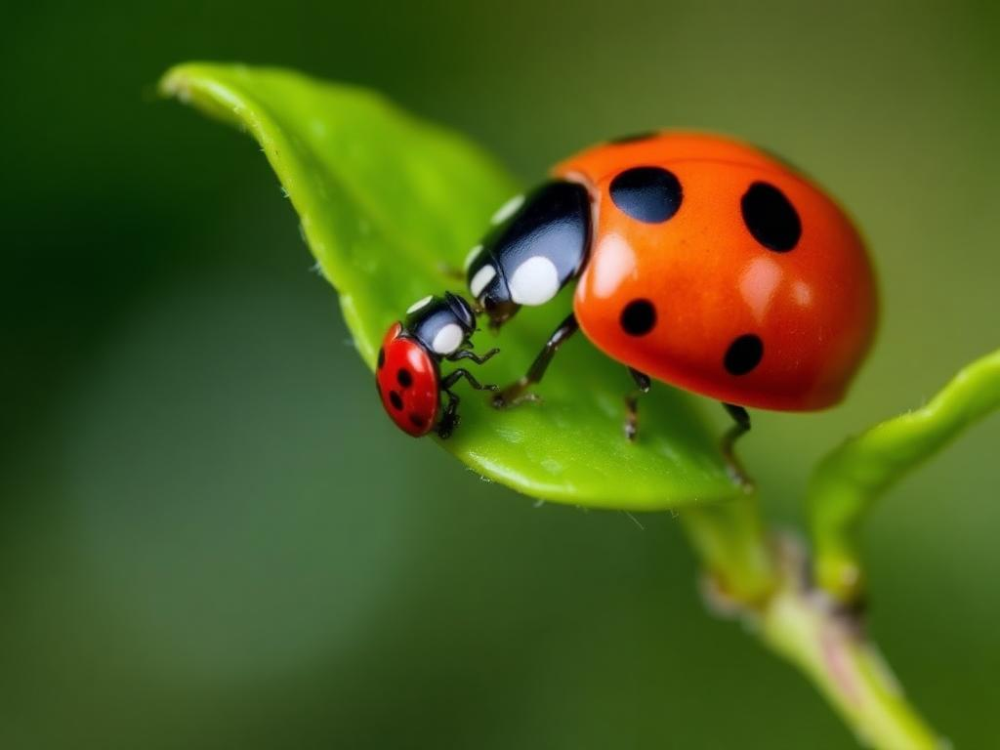
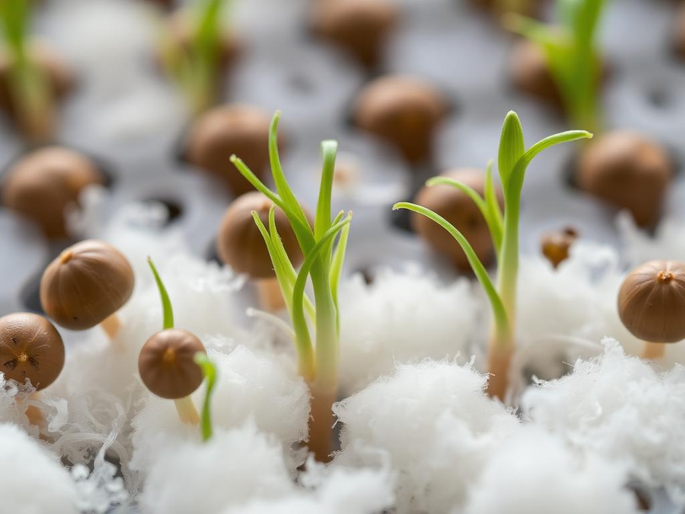
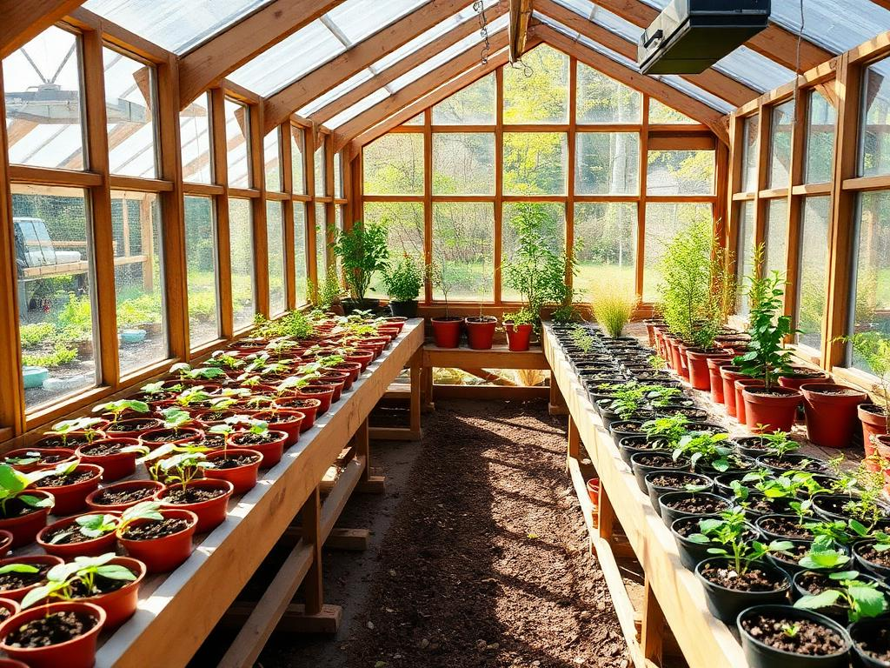
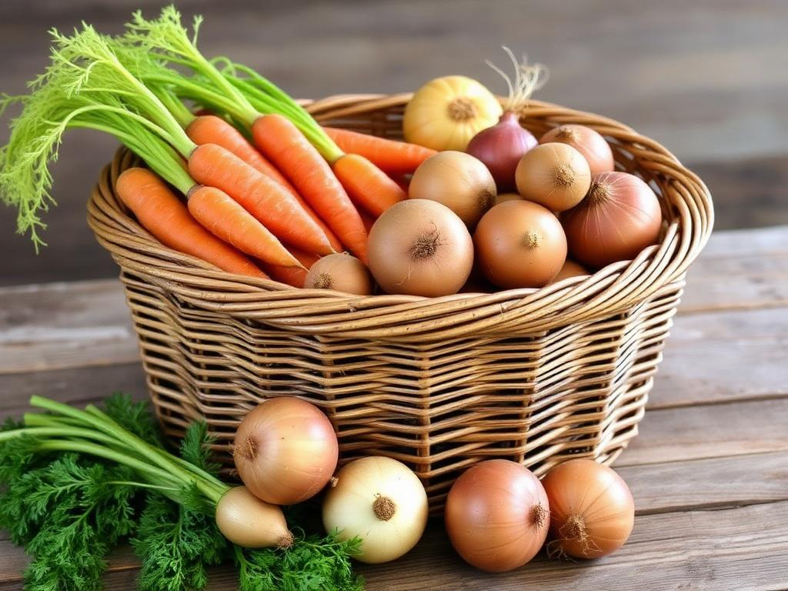

Cultivar é mais do que enterrar uma semente — é entender o solo, ler o céu, conviver com insetos e ter paciência para esperar o broto.
Esta edição reúne, em um só lugar, tudo sobre jardinagem e horticultura: do preparo do canteiro ao controle de pragas, da cobertura do solo às plantas resistentes, da germinação ao viveiro, do cultivo à colheita guardada na tulha.
O ponto de partida para especialidade é simples e ambicioso: preparar um lote de pelo menos 30 metros quadrados, fertilizar, plantar e cuidar de seis plantas diferentes — três a partir de sementes e três a partir de mudas.

Remover ervas daninhas, pedras e restos de cultura. O terreno respira melhor sem competição.
Cavar entre 20 e 30 cm com enxada ou garfo. Soltar o solo é abrir caminho para as raízes.
Adicionar matéria orgânica — esterco curtido, composto, húmus de minhoca — e corrigir o pH com calcário se necessário.
Sementes pequenas a poucos milímetros; mudas no espaçamento certo. Regar logo após o plantio.
Alface, rúcula, cenoura, beterraba, rabanete, coentro, salsa, feijão e milho germinam bem direto no canteiro ou em sementeira.
Tomate, pimentão, couve, brócolis, repolho e morango vão melhor transplantados — ganham vigor antes de enfrentar o sol pleno.

A cobertura — chamada de mulching ou cobertura morta — é uma das técnicas mais antigas da horticultura. Ela protege o solo de extremos e devolve vida a ele.
Quando usar terra: em batatas (amontoa), cenouras e em sementes recém-lançadas, para fixá-las e protegê-las de pássaros. Quando usar palha: em morangos, tomates, abóboras e qualquer cultura que se beneficie de fruto longe do solo úmido.
Toda horta tem visitantes indesejados. A boa notícia é que a maioria pode ser controlada sem despejar veneno — usando observação, biodiversidade e um pouco de receita caseira.

| Tipo | Como funciona | Exemplos |
|---|---|---|
| Manual / mecânico | Catar lagartas, podar partes doentes, instalar barreiras e armadilhas adesivas. | Coleta à mão, telas, cercas, armadilhas amarelas |
| Cultural | Planejar o canteiro para enfraquecer a praga: rotação, consórcio e limpeza. | Rotação de culturas, plantio consorciado, capina |
| Biológico | Usar inimigos naturais que se alimentam das pragas. | Joaninhas (pulgões), louva-a-deus, vespas, pássaros |
| Caseiro / natural | Receitas com ingredientes simples, baixo impacto ambiental. | Calda de fumo, calda bordalesa, óleo de neem, água com sabão de coco, alho |
| Químico | Inseticidas e fungicidas industriais — último recurso, em dose mínima. | Apenas com receituário e equipamento de proteção |
Somente quando os métodos preventivos e biológicos falharem e a praga ou doença ameaçar realmente a colheita. Antes de aplicar:
É a planta que sobrevive — e produz — mesmo quando o clima, o solo, as pragas ou as doenças estão contra ela.
Plantas resistentes toleram secas, geadas, encharcamentos, solos pobres ou ataques constantes de pragas e doenças sem precisar de cuidado intensivo. Algumas resistem por genética, outras por adaptação à região onde nasceram. São a base de qualquer horta segura.
As variedades certas mudam conforme a região — verifique o que prospera no seu município.
Para demonstrar seu conhecimento na prática, escolha uma entre as quatro alternativas abaixo. Cada uma testa uma habilidade diferente do horticultor.

Coloque 100 sementes do mesmo tipo entre folhas de papel-toalha ou algodão úmido, em local arejado e sombreado. Mantenha sempre úmido por 7 a 14 dias. Conte quantas brotaram: o resultado é a taxa de germinação do lote.
Acima de 80% é excelente; abaixo de 60% indica sementes velhas ou mal armazenadas.

Construa uma estrutura coberta com plástico transparente ou tela de sombreamento, com bancada para bandejas de mudas. Controle luz, umidade e temperatura e produza mudas mais fortes para transplantar no canteiro.
Pode ser feita com bambu, madeira reaproveitada e lona — não precisa ser cara.
Escolha três verduras ou legumes de boa saída — alface, cebolinha, rúcula, couve, tomate cereja, pimentão. Plante, cuide até a colheita, lave, embale e venda para vizinhos, feira ou bazar do clube.
Aprende-se sobre custos, calendário de plantio e atendimento ao cliente.

Construa um cesto trançado ou uma tulha (caixa de madeira ventilada) para guardar tubérculos como batata, cebola, alho e cenoura. O segredo é ventilação, sombra e baixa umidade para evitar brotamento e mofo.
A boa armazenagem prolonga a colheita por meses.
Coisas que ninguém ensina nos livros, mas que toda horta acaba contando.
Jardinagem cuida do belo — flores, gramados, paisagem. Horticultura cuida do útil — verduras, legumes, frutas, ervas. Quem faz as duas, faz o belo virar comida.
Em uma colher de chá de solo saudável existem mais de um bilhão de microrganismos. Cuidar do solo é cuidar dessa cidade invisível que alimenta as plantas.
Cenoura gosta de cebola perto. Tomate gosta de manjericão. Milho, feijão e abóbora — as “três irmãs” indígenas — crescem juntos há séculos se ajudando.
Muitos horticultores tradicionais plantam folhas na lua crescente e raízes na lua minguante. Pode não ser ciência exata, mas é sabedoria que atravessou gerações.
Uma minhoca processa o equivalente ao próprio peso em terra por dia, deixando para trás o húmus — o adubo mais rico da natureza. Onde elas estão, a horta vai bem.
Regue de manhã cedo ou no fim da tarde. Água ao meio-dia evapora rápido e queima folhas. Melhor regar bem menos vezes do que pouco todos os dias — raízes profundas resistem mais.
Cascas de frutas, borra de café, folhas secas e restos de poda viram, em poucos meses, o melhor adubo orgânico — sem custo e sem ir para o lixo.
Jardinagem e Horticultura é uma das especialidades originais dos Desbravadores, criada em 1928. Quase um século depois, ainda ensina o mesmo: a paciência de plantar e a alegria de colher.